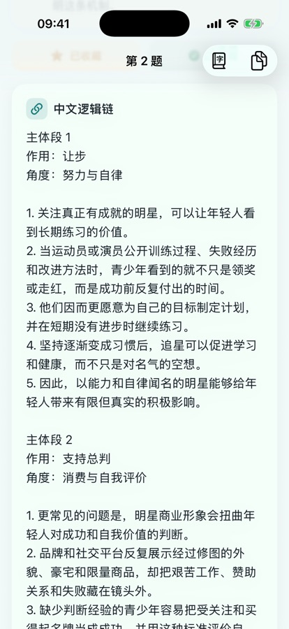
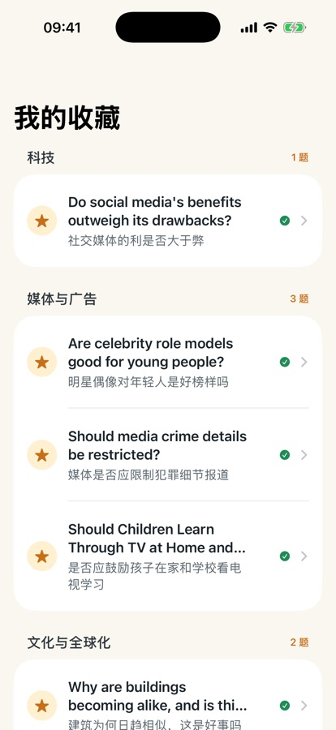
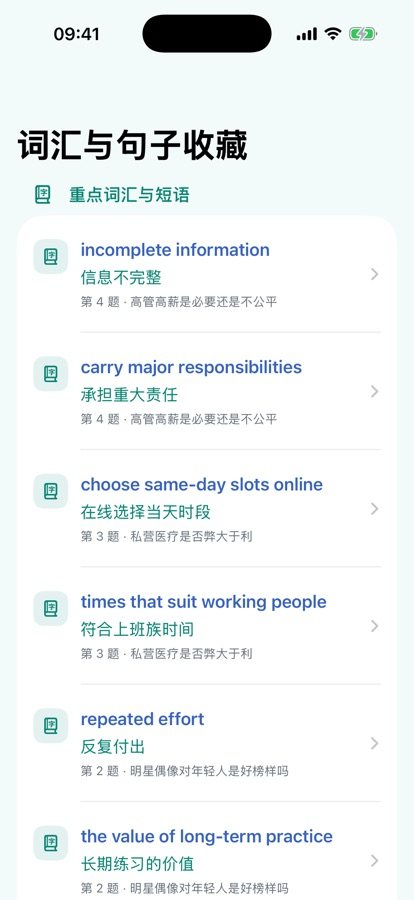

很多考生看范文能看懂，自己写却卡在第二句。缺的不是单词，而是一套可以复用的思考顺序。
App 只做一件事：让「有思路」这件事可以被练出来。
说清题目真正问什么，把核心词拆成 2–4 个维度，并给出一个两段都好展开的立场和段落安排。
每个主体段只论证一个中心，按观点自然展开，不强行凑步数；中文链与英文主体段一一对应。
一键切换到逐句对照模式，英文和中文里的重点短语同步高亮，方便边看边学表达。
题目可收藏并按分类归档；长按句子或短语，即可把中英双语素材存进自己的语言库。
每题可标记学习中 / 已掌握；每完成 30 篇解锁 1 份写作秘籍，共 8 份，从「六步链」到「例子工厂」。
整题内容一键复制去做笔记；题库随 App 打包，无需联网；学习记录可导出备份、重装后导入。
以下内容直接取自 App 内置题库第 2 题，没有改动。
如今，年轻人崇拜体育明星和媒体明星。一些人认为他们没有树立良好的榜样。你认为这是积极还是消极的发展？
比较影响覆盖多少人、持续多久、能否控制或修复，而不是只各列一个好处和坏处。
年轻人崇拜明星有时能获得努力的动力，但媒体更常放大消费和外貌标准，所以这一趋势总体偏负面。
iOS 17 · SwiftUI 原生界面，浅青色主调，长时间阅读不累眼。

学习进度 · 11 类题库可折叠
原题翻译 · 概念拆解

每段标明作用与角度

重点短语同步高亮

按分类归档的题目

长按即可存入素材库
每完成 30 篇解锁一份

方法要点 + 可练习句型
截图来自 iPhone 17 Pro 模拟器真实运行画面；学习进度、收藏为演示数据。
我和 AI 协作完成了从内容规范、语料整理、批量生成到质量审计的完整流程，App 本身是最后一步。
先写出一份《生成格式》文档：每题包含哪些栏目、每段几步、得分点必须覆盖审题/结构/论证，禁止空泛表达。
从公开数据集和范文站筛出 Band 7–7.5 作文，与 252 道题逐题匹配，每题至少 10 篇参考。
2,230篇清洗后的完整范文按题号分批，让 AI 依规范提炼逻辑链并原创改写；结构历经「固定六步 → 自然表达 → 灵活 4–7 步」多次重构。
93个分批工作文件再用 AI 交叉审读：中英是否对应、逻辑是否跳跃、中文是否易懂；每轮问题都记录在案，修复后合并。
578条问题被记录并处理Python 脚本校验字段与禁用词后原子合并；Node 脚本检查 252 题结构，生成 App 读取的精简题库。
0最终全量复查遗留问题questions.json 随包分发，完全离线generate_ios_questions.mjs 校验并生成题库把考生「写不出来」拆成「不知道题目问什么、立场选不好、段落推不下去」三个具体问题，每个功能都对应其中一个，取舍才有依据。
需求分析 · 用户视角先定义每道题的字段和标准，再批量生产。252 道题共用一套结构，App、复制导出、校验脚本都能直接复用。
内容结构化 · 标准化每一轮都先找问题、记录、修复、再复查，直到最终全量复查无遗留。质量不是一次写对，而是一轮轮迭代出来的。
迭代 · 质量把控给清晰的规范、分好批次、定好验收标准，AI 就能稳定交付。这和对接客户、协调资源、推动交付的思路是一样的。
跨角色协作 · 项目推进